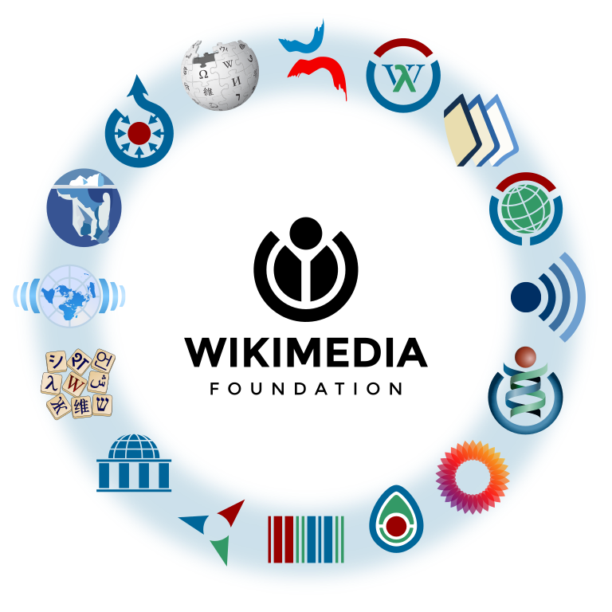
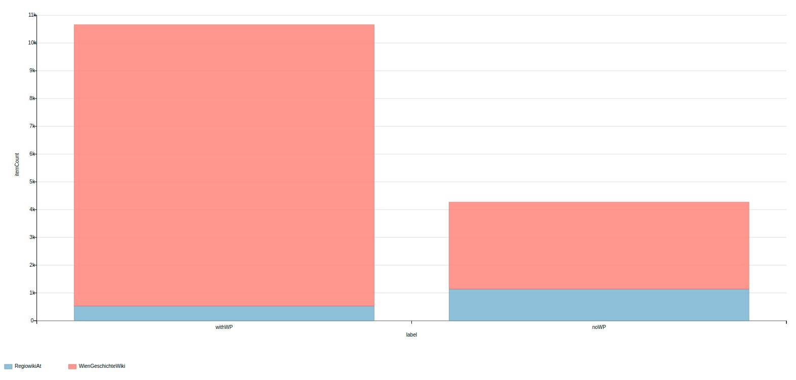
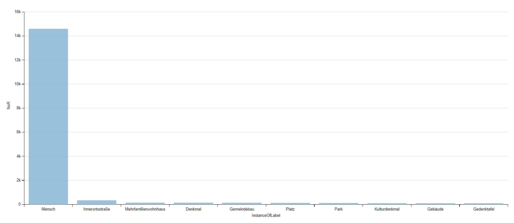
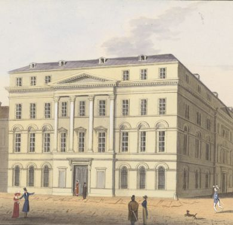

GLAM-Wiki-World
Christian Erlinger

Wien
Geschichte Wiki - Workshop,
10.10.2023
Wiki für GLAMs
- Das Wien Geschichte Wiki ist ein Glücksfall für die Wiener Gedächtnisinstitutionen
- Kulturgut und “enzyklopädisches Wissen” “the wiki-way” präsentierbar ohne Kompromisse (WP:RK / WD:Notability)
Wiki und GLAMs - Angstfrage
- Anschlussfrage: Wie viele Artikel hat das WGW die nach WP:RK irrelevant wären? 
ZHB Luzern und das Wiki*Versum
- “Arbeiten unter Observanz” - mitten in und mit der Community
- Bespielung aller Projekte: Wikipedia, Wikidata, Wikimedia Commons, Wikisource
- “Profitieren von dem was da ist, ergänzen was wir besonderes haben.”
- Outreach-Wiki & GLAM-WikiCH-Group: ZentralGut
Wikidatafizierung I
- Vernetzung mit externen Quellen vielfältiger.
- Visualisierung: Direkte Datenübernahme (MWAPI/REST/WDQS)
- Beispiel: Virtuelle Ausstellung Porträtgalerie
im Katalogsaal der ZHB Luzern
Daten via IIIF und Wikidata - Familiäre Relationen: Geschwister (Bruder? Schwester?)
Wikidatafizierung II
- Aktuell > 328.840 WGW Artikel (https://www.geschichtewiki.wien.gv.at/Spezial:Statistik) - korrekt?
- 16.065 Wikidata-Items mit WGW-ID (Personen
annähernd komplett?)

Technik-Wunsch fürs WGW: SPARQL
- Bernhard hat alles gesagt in: Building a Knowledge Graph for the History of Vienna with Semantic MediaWiki (2023) doi:10.1016/j.websem.2022.100771
- BlazeGraph SPARQL-Endpoint (theroetisch bis 50 Milliarden Tripel, Wikidata aktuell knapp unter 13 Mrd. Performance-Probleme bei komplexen Abfragen merkbar)
- Eigene Wikibase mit Pipeline <-> SMW?
oder weiter gedacht: WGWikiBase
- Eigene Wikibase-Instanzen bringen bereits viel an
Tools mit
- QuickStatements zum einfachen Massenedit
- QueryService
- Arbeiten mit OpenRefine
- Wikibase erhält aktuell REST-API (leichter extern verwend-/verstehbarbar als MW-API)
noch weiter gedacht: Alleine bleibt aber alleine
- Die eigene Wikibase, bedeutet alles im Graph auch selbst zu erstellen:
- Bsp. 3600 Geburtsorte ausserhalb Wiens, die wollen modelliert werden: WDQS Karte aller Geburtstorte von WGW-Personen ausserhalb Wiens
Bibliographie näher heran
- Wikibase als potentielles Katalogreplikat
- “Template:Cite Q”
- Wikidata-basierte Infobox in Primo (vgl. Karl Kraus-Box)
- Volltextdarstellungen-/bearbeitungen im Wiki ->
WikiSource-Extension

Bildpräsentation
- Wikimedia Commons Ingest (vgl. ZentralGut) und Bilder von dort einbinden
- Copyfraud vermeiden:
- Datei:Nationalbank Herrengasse.jpg
- WGW Lizenz: CC BY-NC-ND 4.0 :-( // glücklicher in VL
- (Tolles Beispiel für Commons-Upload!)

{kind=link}